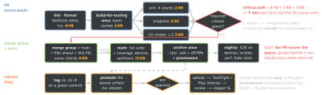

cicd · folio
In one line: A pipeline is a DAG of gates ordered so the cheapest check most likely to fail runs first;
its critical path is the developer’s wait. Speed comes from content-keyed caches only CI writes and
duration-balanced shards; main stays green because a merge queue tests the merge
before it lands; the release artifact is built once, attested, and promoted; the whole
system is judged by the DORA metrics — not by how many jobs it has.
Download PDF Print view LaTeX source


Order and speed
- Cheap and likely-to-fail first: lint (seconds) → compile → unit → snapshot → UI/E2E. Commit stage within XP’s ten-minute build; slow suites in a second stage that “might take a couple of hours” (Fowler, rev. 2024).
- Critical path, not CPU: wall clock = the longest chain. Build once, fan out:
build-for-testing -testProductsPath T.xctestproducts→ artifact (jobs share no disk) →test-without-buildingper shard. - Skip what cannot change: path filters (see the trap); Nx
affected(git diff + project graph); Tuist selective testing (hash per test target + its dependencies — target, not test, granularity). - Cancel superseded PR runs, never deploys: GitHub
concurrency(+cancel-in-progress) · GitLabinterruptible· Buildkite Cancel Intermediate Builds · Xcode Cloud Auto-cancel Builds (on by default).
Sharding — split by duration, not by count
Wall clock ≈ build + slowest shard + per-shard setup (boot, download): past a point more shards only add setup and cost. Timing data: Buildkite bktec (history), CircleCI tests split --split-by=timings (previous run; with none, by name).
| CI | fan-out | each copy learns its slot |
|---|---|---|
| GitHub | strategy.matrix ≤ 256 jobs/run | ${{ matrix.shard }} |
| GitLab | parallel: 1..200 | CI_NODE_INDEX, CI_NODE_TOTAL |
| Buildkite | step parallelism: | BUILDKITE_PARALLEL_JOB, _COUNT |
| Bitrise | pipeline parallel: ≤ 200 | BITRISE_IO_PARALLEL_INDEX (0-based), _TOTAL |
| CircleCI | job parallelism: | CIRCLE_NODE_INDEX, _TOTAL |
| Jest | --shard=2/4 | 1-based index / count |
Caching — what, key, who writes
| cache | key | trap |
|---|---|---|
| downloads: SPM, Pods, npm, Gradle deps | OS + tool version + hash(lockfile) | a key without the lockfile hash restores stale deps |
| outputs: ccache, DerivedData | inputs + compiler (ccache: size + mtime) | absolute paths miss across checkouts; base_dir: “a brittle hack” |
| remote: Bazel (action cache + CAS), Gradle | hash of every declared input | hermetic or wrong: an undeclared input is not in the key |
| Xcode 26 compilation cache | per compile inputs | opt-in, Swift + C; wins on branch switches and clean builds |
GitHub restore: exact key → key as prefix → each restore-keys prefix, newest wins. Entries are immutable (new lockfile = new key), 10 GB/repo by default, gone after 7 days unused. Visible: own branch, default branch, PR base; PR caches sit on refs/pull/…/merge. GitLab: cache:key:files (≤ 10 files → SHA of contents), fallback_keys, policy: pull for readers. Poisoning = an untrusted job writes what a trusted job restores and runs. One rule everywhere: only trusted CI writes — GitHub makes pull_request_target/workflow_run read-only; Bazel: --remote_upload_local_results=false off CI; Gradle: isPush = isCiServer.
Keeping main green
- Not Rocket Science Rule (Hoare 2014; the bors bot): automatically keep a repository that never fails its tests — test the merge, then advance
main: two PRs green against an oldmaincan be red together. - GitHub merge queue: workflows need the
merge_grouptrigger, else checks never report. Branchgh-readonly-queue/main/…= main + PRs ahead + this PR; 1–100 groups at once, 1–100 PRs per merge. Failure or timeout → PR out, groups behind rebuilt; jumping rebuilds all in flight. - GitLab merge trains (Premium+): ≤ 20 pipelines in parallel by default; a failure drops the MR and restarts all behind it.
- Required checks match by name: renaming a job silently un-requires it.
- Trunk (DORA): ≤ 3 active branches, merged daily, no freezes. Fowler: commit to mainline every day; fix a red build first — usually by revert.
Five CI systems side by side
| config · DAG | runs on | secrets on PRs | |
|---|---|---|---|
| GitHub Actions | .github/workflows/*.yml · needs: | hosted (Linux, Windows, macOS) or yours | fork PR: none, read-only token |
| GitLab CI | .gitlab-ci.yml · stages .pre build test deploy .post + needs: (≤ 50) | SaaS or your runners | protected vars on protected refs only; forks: none |
| Buildkite | pipeline.yml + steps generated at run time (pipeline upload) | “hybrid”: SaaS control plane, your agents; or hosted | code + secrets never reach Buildkite |
| Bitrise | bitrise.yml: pipelines → workflows (depends_on) → steps | hosted macOS/Linux | none unless “Expose for Pull Requests” |
| Xcode Cloud | no YAML: Xcode / App Store Connect; ci_scripts/ | Apple only; 25 compute h/month included | secret env vars masked in logs |
Build once, promote
The first stage “will do any compilation and provide binaries for later stages” (Fowler 2013, after Humble & Farley); a rebuild per environment ships a binary nobody tested.
- App Store: each upload needs a new build string (
CFBundleVersion“uniquely identifies the build”); a version takes one build, swappable until submitted — the TestFlight build is the reviewed one. Since 28 Apr 2026: Xcode 26+ and a 26 SDK. - Google Play:
versionCodemust grow, never reused, ≤ 2 100 000 000. Promote via “Add from library” orEdits.tracks: updatewith the existingversionCode; staged =inProgress+userFraction(not on a first release). You sign with the upload key; Play re-signs with the app signing key (required for apps created since Aug 2021).
Provenance — prove which build it is
| SLSA | Build track requirement | stops |
|---|---|---|
| L1 | provenance shows how it was built | mistakes; documents |
| L2 | signed provenance from a hosted platform | tampering after the build |
| L3 | hardened: runs isolated, signing key unreachable from build steps | tampering during the build |
SLSA v1.2 (24 Nov 2025) adds a Source track: L1 version control → L2 history + source provenance → L3 enforced controls → L4 code review. GitHub actions/attest (id-token + attestations: write) = Build L2; L3 via a shared reusable workflow. Keyless Sigstore: Fulcio certifies the job’s OIDC identity for 10 minutes; public repos log to Rekor. Gate deploys on gh attestation verify app.ipa -R org/app — it proves where from, not safe.
DORA — measure the system
| T | change lead time | commit → deployed in production |
| T | deployment frequency | deploys per period, or time between them |
| T | failed deploy. recovery time | was MTTR; deploy-caused failures only (2023) |
| I | change fail rate | share of deploys needing immediate intervention |
| I | deployment rework rate | share that are unplanned, caused by an incident (2024) |
Throughput / Instability grouping since 2024. 2024 elite: on-demand deploys, lead time < 1 day, ∼5 % fail rate, recovery < 1 h(unverified). 2025 report (∼5 000 people): AI adoption → more throughput, still less stability; seven team profiles.
Traps
- Required check + path filter: a skipped workflow stays “Pending” forever and blocks the PR; a job skipped by
if:reports Success. Fix: one always-run gate job (if: always()) thatneeds:the rest. - Secrets mask only verbatim: a base64 or derived copy prints in clear — register it as a secret too.